Tianchi OS 的 Mobile 版：三个方案
调研 + 可交互 demo，2026-10-21。demo 用的是网站里真实的 app 和数据，不是图片拼的。
结论：推荐方案 3（iOS 化），可行，而且比想象中便宜。
关键发现：现有的每个 app 都能原样跑在 iOS 壳里。主屏图标调用的就是桌面版同一个
打开 demo（/?ios） 桌面浏览器里会画一个手机外框；手机上直接全屏
关键发现：现有的每个 app 都能原样跑在 iOS 壳里。主屏图标调用的就是桌面版同一个
open()，最新打开的窗口就是前台全屏 app；“窗口”= iOS 的“后台 app”，所以 App Switcher 几乎白送。壳本身（锁屏、主屏、灵动岛、Messages、Settings）约 500 行，demo 用了半天。打开 demo（/?ios） 桌面浏览器里会画一个手机外框；手机上直接全屏
三个方案对比
1 · 缩小版桌面（ryOS 式）
一眼就是“桌面 OS 在手机上”。窗口在手机上只能全屏，拖拽、菜单栏、Dock 在触屏上都别扭；蛇的“hello”壁纸在竖屏放不下。
工期 ≈ 2–3 天 · 惊艳度 中 · 可用性 中低
2 · 内容卡片流（现状加强）
最好用、最便宜，但丢掉了 OS 隐喻和蛇，跟桌面版像两个网站。你自己也不想要。
工期 ≈ 1 天 · 惊艳度 低 · 可用性 高
3 · iOS 化（macOS ↔ iOS）
隐喻一致：桌面是 macOS，手机是 iOS。触屏交互本来就是 iOS 的母语，所以反而比方案 1 更好用。蛇住进灵动岛。
工期 ≈ MVP 4–5 天，打磨到上线 1.5–2 周 · 惊艳度 高 · 可用性 高
Demo 截图（真实运行）
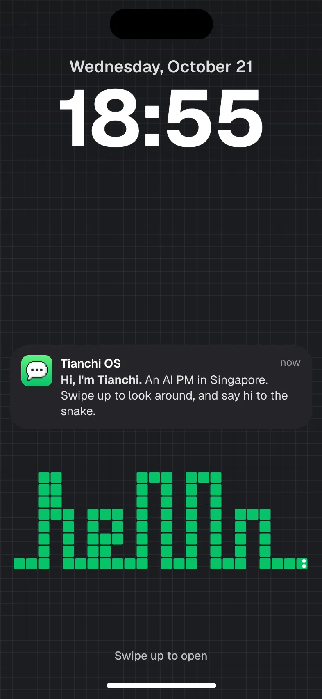
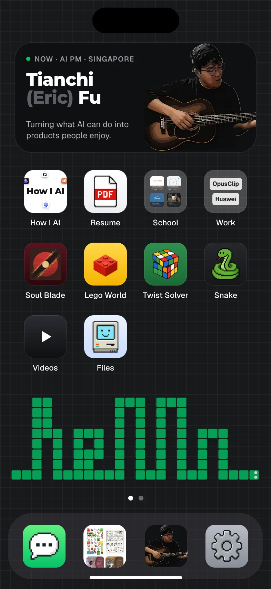
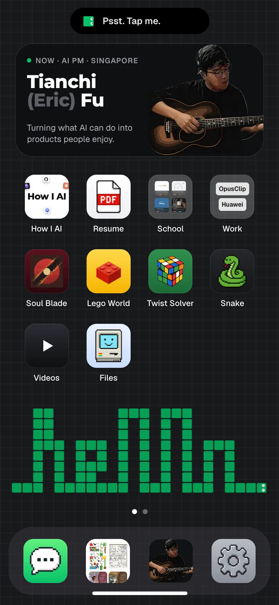
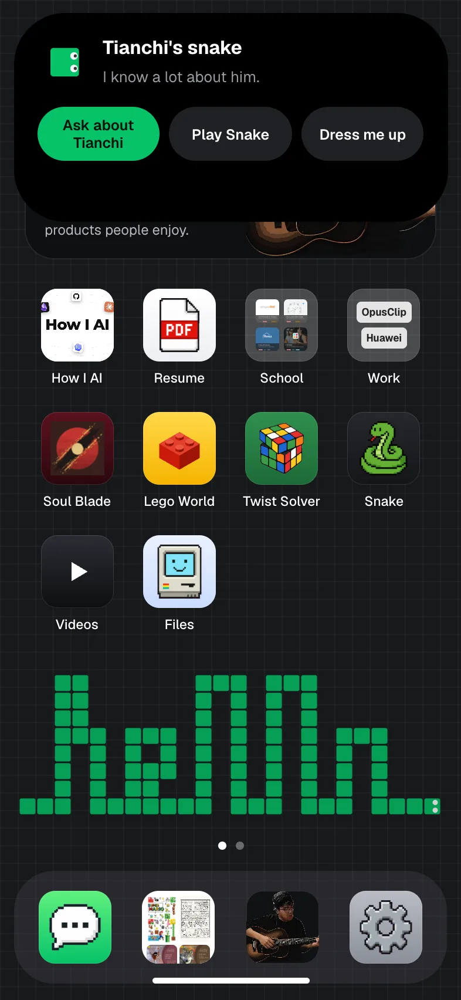
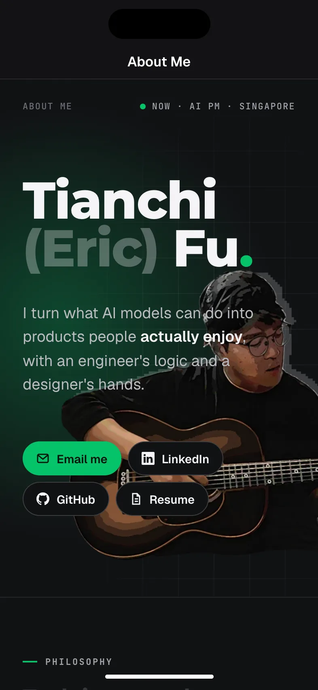
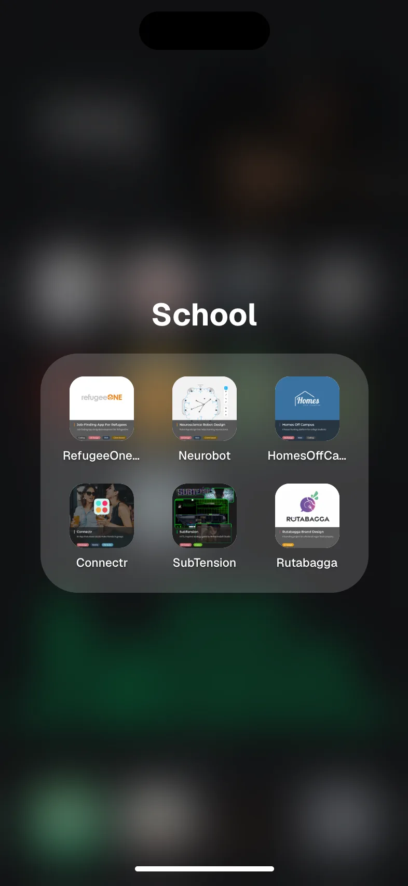
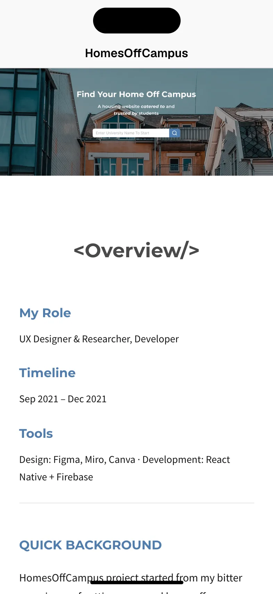
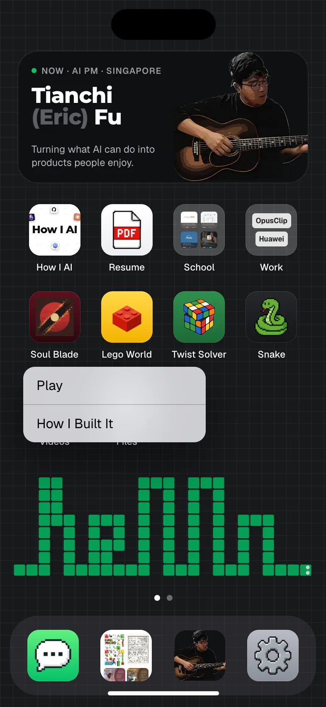
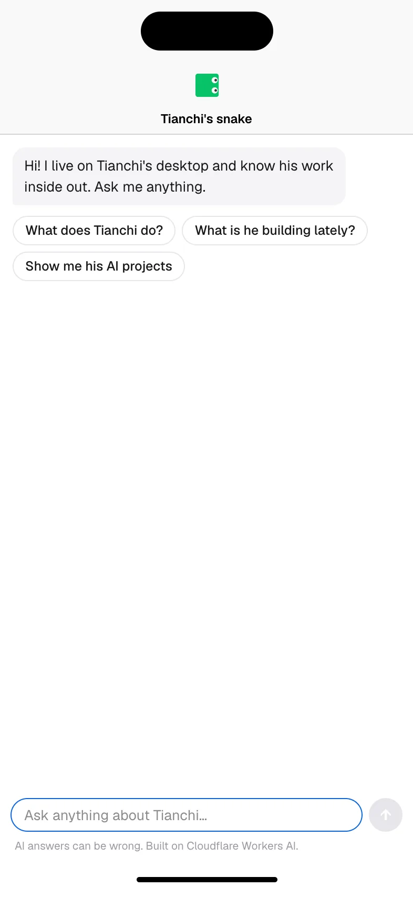
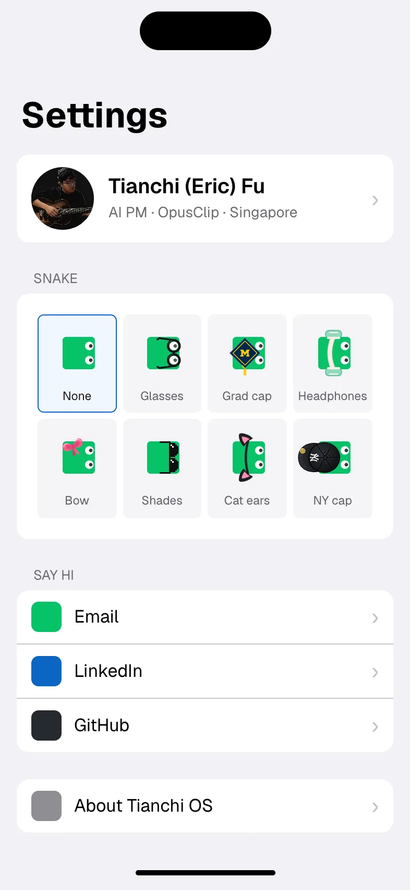
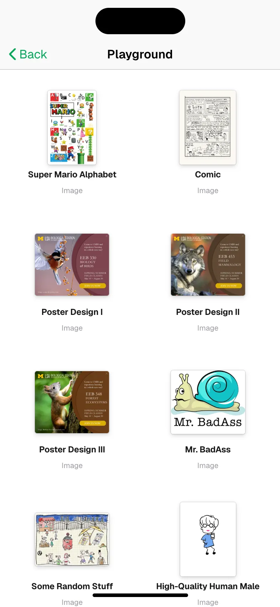
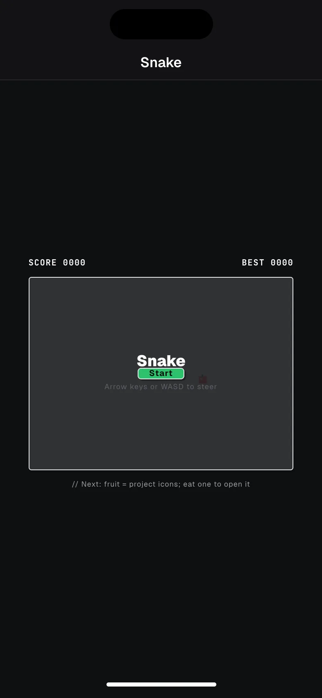
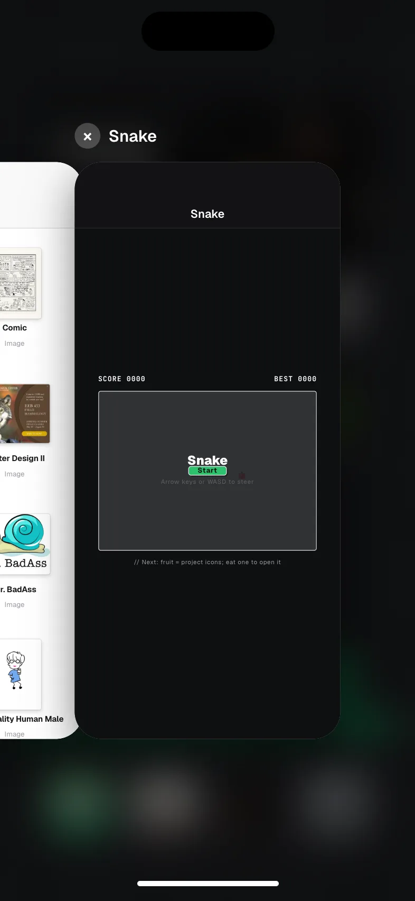
现有内容怎么 fit
| 桌面（macOS） | 手机（iOS） | 状态 |
|---|---|---|
| Boot splash | 锁屏（时间、日期、一条来自 Tianchi 的通知） | demo 已做 |
| 桌面 + 蛇壁纸 | 主屏；“hello”蛇按 15px 格子画在壁纸下半部 | 已做 |
| 菜单栏 | 状态栏（真手机上用系统自带的，见风险 1） | 已做 |
| Dock | iOS Dock：Messages · Photos · About · Settings | 已做 |
| 蛇助手（头上冒泡泡） | 灵动岛：探头提示 → 点开三个动作 | 已做，最有记忆点 |
| Ask about Tianchi | Messages app（同一个对话组件和后端） | 能用；气泡要改成 iMessage 样式 |
| 窗口 / 多窗口 | 全屏 app / App Switcher | 架构直接复用 |
| Finder 文件夹 | 主屏文件夹（School、Work）+ Files / Photos / Videos | 能用；Photos 应改成 iOS 相册网格 |
| About Me | About Me（主屏小组件也指向它） | 能用；393px 下要单独调排版 |
| 案例页（13 个） | 同一个阅读页 + iOS 导航栏 | 容器查询已经适配窄屏 |
| Preview / Player | Photos / TV 的查看器 | 要加左右滑切图、双指缩放 |
| Snake（窗口版） | Snake app，滑动操作 | 能玩；提示文案和画布尺寸要改 |
| 桌面蛇大作战（SNAKE.SYS） | 改成灵动岛里的“Play”，或锁屏小游戏 | 待定 |
| Soul Blade | 长按：Play / How I Built It | 游戏要键盘：要么在那个仓库加触屏，要么显示“Best on desktop” |
| Lego World / Twist Solver | 同上 | Twist 已有手机版；Lego 需实测 |
| Settings | iOS Settings：个人卡、换装、联系方式、About Tianchi OS | 已做；Dock 大小、屏保等桌面专属项不出现 |
| 屏保 | 息屏 → 回锁屏 | 可选 |
| resume.pdf | Resume app | iOS Safari 的 PDF 内嵌要实测 |
风险与必须解决的点
- 1. 真机上的“iOS 套 iOS”。在 Safari 里，系统自己的状态栏和底部横条都在。我们的假状态栏会重复（demo 在真机宽度下已自动隐藏）；底部手势区属于系统，往上滑会退出 Safari，所以“回主屏”要换成别的手势或按钮。
彩蛋机会：如果访客把网站“添加到主屏幕”（PWA 全屏），我们的灵动岛可以正好贴着真的灵动岛展开，效果会非常惊艳。 - 2. Android 用户也会看到 iOS。作为作品集隐喻是成立的（你的品牌是“OS”，不是“像不像他们的手机”），但值得你拍板。
- 3. 苹果的视觉语言。只借交互范式（锁屏、主屏、灵动岛、文件夹），图标和字体用我们自己的像素图标和 Geist / 系统字体，不放苹果商标或 logo。
- 4. 性能。毛玻璃（backdrop-filter）在低端 Android 上会掉帧，需要降级方案。
- 5. 外部游戏（Soul Blade 键盘操作）不在这个仓库里，需要另外处理。
工期估算（按我们现在这种协作速度）
| 阶段 | 内容 | 工期 |
|---|---|---|
| MVP | 壳打磨：手势、真机 safe-area、隐藏假状态栏；About 窄屏排版；Snake 触屏和提示；Photos 网格；Messages 改 iMessage 样式 | 4–5 天 |
| 上线版 | Preview 滑动 / 缩放、外部游戏处理、PWA 灵动岛彩蛋、真机 QA（iPhone / Android / iPad 竖屏）、性能降级 | +1 周 |
| 可选 | 主屏第二页（Images / Videos 小组件）、锁屏小游戏、屏保 | 按需 |
要你决定的
- 走方案 3 吗？如果走，先做 MVP 再看。
- Android 也给 iOS 吗？（我建议是）
- 真机上“回主屏”用哪种：顶部灵动岛点一下？左上角 “‹ Home”？还是保留底部横条但抬高？
- Soul Blade 在手机上：加触屏操作，还是提示“Best on desktop”？